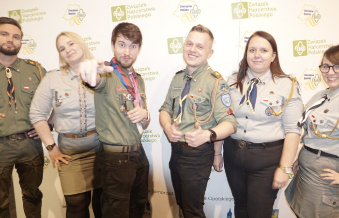

Chorągiew Opolska ZHP

Historia działalności.
| Choragiew Mazowiecka ZHP | |
| Rodzaj jednostki | Chorągiew |
| Jednostka nadrzędna | Główna Kwatera ZHP |
| Jednostki podległe | 7 hufców |
| Rok powstania pierwszych drużyn | 1945 |
| Adres siedziby | ul. Armii Krajowej 10/12 45-071 Opole |
Chorągiew Opolska współcześnie
| Hufiec | Adres | Komendant |
| Brzeg | Bd. | Bd. |
| Głubczyce | Bd. | Bd. |
| Kędzierzyn-Koźle | Bd. | Bd. |
| Krapkowice | Bd. | Bd. |
| Nysa | Bd. | Bd. |
| Opole-miasto | Bd. | Bd. |
| Praszka | Bd. | Bd. |